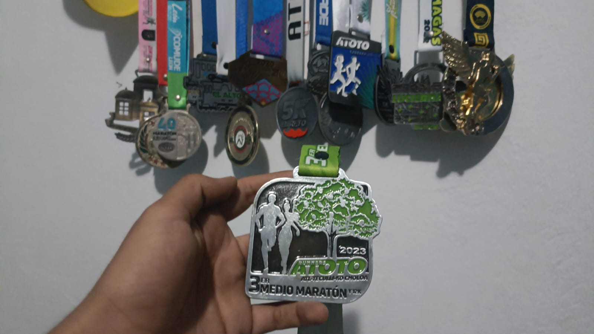

Corriendo al infinito
Como mencionaba en la introduccion, no me gustaba correr porque al principio me sentía obligado a ello por mi entorno, pero conforme fue pasando el tiempo aprendí a disfrutarlo y ahora es una actividad que me gusta mucho realizar y que incluso me saca el lado competitivo tratando de cada día mejorar mis tiempos en las carreras que he ido
En mi vida, he tenido la oportunidad de explorar diversas pasiones deportivas que han enriquecido mi experiencia y me han llevado a desafiarme de diferentes maneras. El correr carreras es una de mis pasiones centrales, una actividad que me ha permitido superar límites personales y encontrar un profundo sentido de logro.
Sin embargo, mi amor por el running coexiste con otro interés significativo: el boxeo y las artes marciales mixtas. Estas disciplinas me ofrecen una perspectiva única sobre el deporte, donde la estrategia, la fuerza y la agilidad se combinan en un enfoque distinto. Estas tres pasiones se entrelazan en mi vida, y cada una de ellas ha contribuido a mi crecimiento personal y a la manera en que enfrento los desafíos, tanto en el deporte como en la vida cotidiana.
